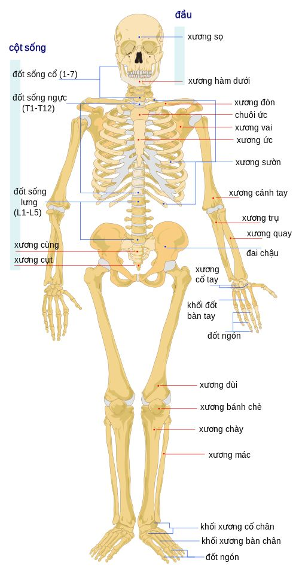
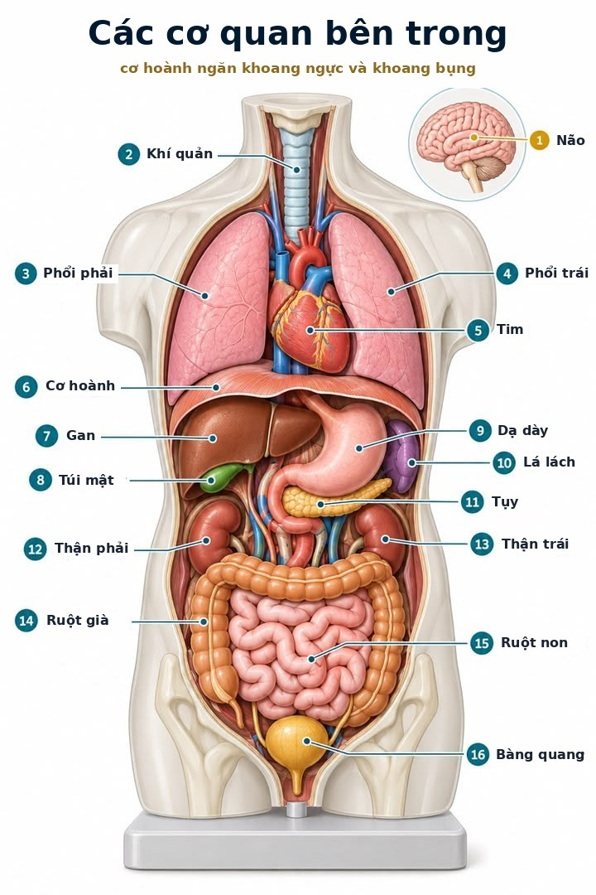
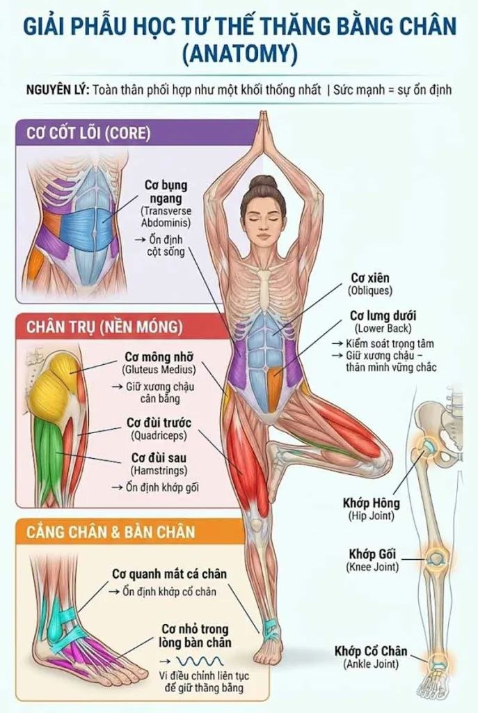

Yoga người lớn · Kiến thức cần biết khi tập yoga
Giải phẫu trong yoga: xương, khớp, cơ và thói quen đi, đứng, nằm, ngồi
Người mới đến lớp ít khi hỏi về tư thế. Câu đầu tiên thường là: “Cô ơi, em hay mỏi vai gáy.”

Rồi tới những câu khác. “Em ngồi lâu là lưng nhức.” “Đầu gối em cứ kêu lục cục.” “Sáng ngủ dậy cổ em cứng đơ.”
Sophia thường hỏi lại vài câu. Một ngày ngồi mấy tiếng? Điện thoại hay cầm ở đâu? Ngủ gối cao hay thấp? Túi xách đeo bên nào?
Nhiều khi câu trả lời nằm ngay ở đó. Không phải ở một thế yoga nào cả. Mà ở những việc mình làm hàng nghìn lần mỗi ngày mà không để ý: đi, đứng, nằm, ngồi.
Hiểu một chút về xương, khớp và cơ giúp mình hai việc. Tập yoga an toàn hơn, đúng chỗ hơn. Và sống trong chính cơ thể mình nhẹ nhàng hơn, cả khi đã cuộn tấm thảm lại.
- Cơ thể là một đội
- Xương
- Cột sống
- Khớp
- Cơ
- Gân, dây chằng, sụn
- Đem vào buổi tập
- Đi, đứng, nằm, ngồi
- Khi nào hỏi bác sĩ
Cơ thể là một đội cùng làm việc
Xương là bộ khung. Khớp là chỗ nối để khung ấy chuyển động được. Cơ kéo xương đi. Còn gân, dây chằng, sụn và lớp màng cân mạc thì buộc tất cả lại với nhau.
🦴 Xương
Bộ khung nâng đỡ, che chở, làm đòn bẩy.
🔗 Khớp
Chỗ hai xương gặp nhau. Nơi chuyển động xảy ra.
💪 Cơ
Động cơ. Co lại để kéo xương, giữ dáng, sinh nhiệt.
🧵 Mô liên kết
Gân, dây chằng, sụn, cân mạc. Nối, giữ, đệm.
Không bộ phận nào làm việc một mình. Gối đau đôi khi vì hông cứng. Vai mỏi có khi bắt đầu từ cái đầu cứ chúi ra trước. Cô hay nói với học viên: chỗ đau là chỗ đang kêu cứu. Chưa chắc đã là chỗ gây ra chuyện.
Xương: một bộ khung đang sống
Người trưởng thành có 206 chiếc xương. Em bé mới sinh có nhiều hơn, khoảng 270 đến 300 mảnh, rồi một số dần liền lại với nhau khi lớn lên.

Nhiều người nghĩ xương là thứ cứng và chết. Không phải vậy. Xương là mô sống, có mạch máu, có dây thần kinh, và luôn được làm mới. Mỗi năm, khoảng một phần mười bộ xương người lớn được thay mới từng chút một.
Xương làm năm việc:
1. Nâng đỡ
Giữ hình dáng cơ thể, làm chỗ bám cho cơ.
2. Bảo vệ
Hộp sọ che não. Lồng ngực che tim, phổi. Cột sống che tủy sống.
3. Vận động
Xương là những đòn bẩy. Cơ kéo, xương chuyển động.
4. Tạo máu
Tủy đỏ trong xương sinh ra hồng cầu, bạch cầu, tiểu cầu.
5. Giữ khoáng chất
Khoảng 99% canxi của cơ thể nằm trong xương và răng.
Có một điều cô rất thích. Xương mạnh lên khi được dùng. Được chịu lực vừa phải và đều đặn, xương dày và chắc hơn. Nằm lâu, ít đi lại, xương mỏng dần.
Trong yoga, các thế đứng trên hai chân, đứng một chân, chống tay như tấm ván hay chó úp mặt đều cho xương chịu lực theo cách nhẹ nhàng. Xương “nghe” được những lực ấy.
📚 Khoa học và sách hay nói gì
Nhà phẫu thuật người Đức Julius Wolff mô tả từ năm 1892: xương tự sắp xếp lại cấu trúc theo lực mà nó phải chịu. Ngày nay người ta gọi đó là định luật Wolff.
NASA ghi nhận các phi hành gia sống trong môi trường không trọng lực mất khoảng 1 đến 1,5% khối lượng xương hông và cột sống mỗi tháng nếu không tập luyện. Không có lực đè, xương mỏng đi rất nhanh.
Cột sống: bốn đường cong mềm
Cột sống có 33 đốt. 7 đốt cổ, 12 đốt ngực, 5 đốt thắt lưng, rồi xương cùng (5 đốt dính liền) và xương cụt (thường 4 đốt nhỏ dính lại). Giữa các đốt cử động được là đĩa đệm, như những chiếc gối nhỏ, đàn hồi.
Nhìn từ bên cạnh, cổ hơi cong về phía trước. Lưng ngực cong về phía sau. Thắt lưng cong về phía trước. Xương cùng cụt lại cong về phía sau. Nhờ những đường cong ấy, cột sống đỡ được sức nặng và nhún được như một chiếc lò xo.
Nên khi Sophia nói “kéo dài cột sống”, cô không có ý bảo ép phẳng lưng. Chỉ là để các đường cong trở về độ tự nhiên của chúng. Không gù quá. Không ưỡn quá.
Cột sống chuyển động theo bốn hướng: gập về trước, ngửa ra sau, nghiêng sang bên và xoay. Mỗi vùng có sở trường riêng. Cổ xoay và gật rất linh hoạt. Lưng ngực xoay tốt, nhưng bị lồng ngực giữ nên ngửa ra sau hơi khó. Thắt lưng gập và ngửa được nhiều, nhưng xoay rất ít, chỉ được vài độ mỗi đốt.
Ở lớp, cô hay thấy: Trong thế vặn người, nhiều người cố xoay thật sâu từ eo, rồi kêu mỏi thắt lưng. Cô hay nhắc: hít vào kéo dài lưng lên trước. Thở ra mới xoay, và xoay từ vùng ngực, từ xương ức. Vặn ít hơn mà thấy dễ chịu hơn hẳn.
📚 Khoa học và sách hay nói gì
Với người loãng xương, hiểu cột sống còn quan trọng hơn. Nghiên cứu ở Mayo Clinic (Sinaki và Mikkelsen, Archives of Physical Medicine and Rehabilitation, 1984) theo dõi phụ nữ mãn kinh bị loãng xương cột sống. Ở nhóm tập các bài gập người về trước, 89% bị thêm đốt sống lún xẹp mới. Ở nhóm tập các bài duỗi lưng, con số này là 16%.
Vì thế người loãng xương nên hỏi bác sĩ trước khi tập, và tránh các thế gập tròn lưng có tì đè sức nặng như thế cái cày, gập người sâu, cuộn tròn lưng.
Khớp: nơi chuyển động xảy ra
Chỗ hai xương gặp nhau gọi là khớp. Có khớp gần như không cử động, như các đường khớp trên hộp sọ. Có khớp cử động rất ít, như giữa các đốt sống qua đĩa đệm. Còn phần lớn khớp ở tay, chân là khớp động, hay khớp hoạt dịch.
Trong khớp động, đầu xương được bọc một lớp sụn trơn láng. Cả khớp nằm trong một chiếc bao, bên trong có dịch khớp sánh như lòng trắng trứng, vừa bôi trơn vừa nuôi sụn.
Sụn khớp không có mạch máu. Nó được nuôi chủ yếu nhờ dịch khớp thấm vào khi khớp được ép rồi nhả, ép rồi nhả, lúc mình cử động. Nghĩ tới đó cô thấy thương cơ thể lắm. Vận động nhẹ nhàng, đều đặn chính là cách cho sụn ăn.
Khớp động có sáu kiểu chính:
Khớp cầu
Đầu xương tròn nằm trong một ổ lõm. Xoay được mọi hướng.
Vai, hông.
Khớp bản lề
Gập và duỗi như cánh cửa. Gối xoay thêm được chút ít khi đang gập.
Khuỷu tay, đầu gối.
Khớp trục
Xoay quanh một trục.
Đốt cổ 1 và 2 (lắc đầu “không”), khớp giúp lật bàn tay.
Khớp lồi cầu
Gập, duỗi, nghiêng hai bên, không xoay.
Cổ tay.
Khớp yên ngựa
Hai mặt khớp như yên ngựa lồng vào nhau. Cho ngón cái cầm nắm khéo léo.
Gốc ngón tay cái.
Khớp phẳng
Hai mặt phẳng trượt nhẹ lên nhau.
Giữa các xương nhỏ cổ tay, cổ chân, các khớp nhỏ phía sau đốt sống.
Khớp càng linh hoạt thì thường càng kém vững. Vai là khớp linh hoạt nhất cơ thể. Ổ khớp vai nông, nên vai dựa nhiều vào bốn cơ nhỏ ôm quanh, gọi là nhóm cơ chóp xoay. Hông thì ngược lại. Ổ khớp hông sâu, ôm gọn đầu xương đùi. Rất vững. Nhưng không xoay rộng được như vai.
Hiểu điều này giúp mình tập đúng ở từng khớp:
Cổ
Xoay cổ chậm, không giật. Thế đứng bằng đầu, nến vai chỉ tập khi có người hướng dẫn và cơ thể đã sẵn sàng.
Vai
Trong chó úp mặt, đẩy sàn ra xa, vai không sụp. Hạ người từ tấm ván xuống thì khuỷu tay không thấp hơn vai.
Thắt lưng
Kéo dài trước, xoay sau. Gập người về trước thì gập từ khớp hông, gối có thể hơi chùng.
Hông
Mở hông dần trước khi vào các thế ngồi hoa sen, bồ câu. Động tác xoay phải đến từ hông.
Gối
Khi gập, gối hướng theo ngón chân thứ hai. Không ép gối để vào hoa sen. Gối là bản lề, không thích bị vặn.
Cổ tay
Xòe đều các ngón, ấn gốc ngón trỏ và ngón cái xuống sàn để chia lực. Khởi động cổ tay trước.
Đọc kỹ hơn từng điểm, có hình đúng và chưa đúng: 10 nguyên tắc định tuyến cơ bản.
Cơ: động cơ của mọi chuyển động
Cơ thể có ba loại cơ. Cơ tim chỉ có ở tim. Cơ trơn nằm ở thành ruột, thành mạch máu, tự làm việc mà mình không cần nghĩ. Loại thứ ba là cơ vân, hay cơ xương. Đây là loại mình điều khiển được, và có hơn 600 cơ như thế.
Cơ xương làm nhiều việc hơn mình tưởng. Kéo xương để chuyển động. Giữ dáng ngồi, dáng đứng. Sinh nhiệt (run lên khi lạnh chính là cơ đang làm ấm cơ thể). Ôm và giữ khớp. Cơ bắp chân còn giúp bơm máu từ chân về tim mỗi bước đi.
Cơ chỉ biết kéo. Không biết đẩy. Vì vậy cơ làm việc theo cặp. Bên này co lại thì bên kia phải nhường, giãn ra.
Hiểu chỗ này rồi, cô thấy nhiều thế yoga dễ hiểu hơn. Muốn mặt sau đùi giãn ra khi gập người về trước, hãy để mặt trước đùi làm việc nhẹ. Cơ phía sau sẽ được “cho phép” thả ra.
Cơ có ba cách làm việc:
Co ngắn
Cơ ngắn lại khi làm việc.
Ví dụ: cuộn lưng từ từ đứng dậy sau khi gập người.
Co dài
Cơ dài ra nhưng vẫn làm việc, như chiếc phanh.
Ví dụ: hạ người thật chậm từ tấm ván xuống sàn.
Co tĩnh
Cơ làm việc, khớp đứng yên.
Ví dụ: giữ thế chiến binh, giữ tấm ván.
Phần lớn thời gian giữ thế trong yoga là co tĩnh. Còn kiểu co dài, cái phanh ấy, là thứ giúp mình vào và ra một thế mềm mại, không rơi xuống.
Cơ lõi và cơ hoành
Nói “siết bụng”, nhiều người chỉ nghĩ tới mấy múi cơ phía trước. Nhưng lớp giữ cột sống vững nằm sâu hơn. Cơ ngang bụng ôm quanh eo như một chiếc đai. Những cơ nhỏ chạy dọc cột sống. Cơ hoành ở trên. Cơ sàn chậu ở dưới. Bốn phía như bốn bức tường của một chiếc hộp.
Và hơi thở đi qua chính chiếc hộp ấy. Cơ hoành là cơ thở chính. Nó nằm như một chiếc vòm, ngăn khoang ngực với khoang bụng. Hít vào, vòm hạ xuống, bụng hơi phồng ra. Thở ra, vòm trở lên.

Vì cơ hoành nằm sát gan, dạ dày, ruột, nên mỗi lần nó lên xuống, các cơ quan trong bụng cũng được xoa nhẹ theo. Đó là một lý do người ta nói thở bụng chậm giúp tiêu hóa dễ chịu hơn.
Tập thở với cơ hoành: Thở bụng · Các phép thở trong Yoga.
Kéo giãn: dẻo lên nhờ đâu?
Tập kéo giãn đều thì cơ dẻo hơn. Nhưng trong vài tuần đầu, phần lớn thay đổi lại nằm ở hệ thần kinh. Cơ thể quen dần với cảm giác bị kéo, thấy an toàn hơn, và “cho phép” mình đi xa hơn.
Điều này với Sophia rất đẹp. Nó có nghĩa là thở chậm, thả lỏng, cảm thấy an toàn sẽ giúp mình dẻo lên. Còn cố ép thì cơ thể co lại để tự bảo vệ.
Cũng có lúc mình không xuống thêm được không phải vì cơ cứng, mà vì xương đã chạm xương. Hình dạng xương hông, xương đùi mỗi người một khác. Có người ngồi hoa sen rất dễ. Có người tập nhiều năm vẫn không vào được, và chẳng phải lỗi của ai.
📚 Khoa học và sách hay nói gì
Một bài tổng quan trên tạp chí Physical Therapy (Weppler và Magnusson, 2010) cho thấy khi tập kéo giãn trong thời gian ngắn, cơ dài ra được thêm chủ yếu nhờ người tập chịu được cảm giác kéo tốt hơn, chứ chưa chắc cơ đã thật sự dài ra.
Trong cuốn Your Body, Your Yoga (2016), Bernie Clark phân biệt hai giới hạn: lực căng (cơ, cân mạc còn kéo được, tập dần sẽ mở) và lực nén (xương chạm xương, có tập bao nhiêu cũng không đi thêm được). Ông nhắc người tập rằng mỗi bộ xương mỗi khác, nên cùng một thế sẽ trông khác nhau trên từng người.
Gân, dây chằng, sụn, cân mạc
Gân
Nối cơ với xương. Truyền lực kéo của cơ.
Dây chằng
Nối xương với xương, giữ khớp vững. Ít đàn hồi.
Sụn
Lớp đệm trơn ở đầu xương, giúp khớp trượt êm.
Cân mạc
Lớp màng mỏng bọc quanh từng cơ, như lớp màng trắng bọc múi cam, nối cơ thể thành một mạng.
Gân và dây chằng có ít mạch máu, nên khi bị tổn thương thì lành chậm hơn cơ nhiều. Dây chằng mà bị kéo giãn quá mức thì khó trở lại như cũ. Khớp sẽ lỏng đi.
Vì thế trong yoga, cô muốn cơ giãn, chứ không muốn khớp bị “treo”. Khi giữ thế, để cơ ôm lấy khớp, đừng thả cả sức nặng dồn vào khớp.
Ở lớp, cô hay thấy: Người dẻo bẩm sinh hay đứng khóa gối ra sau, chống tay khóa khuỷu cong ngược. Nhìn thì thẳng, đẹp. Nhưng lúc ấy dây chằng đang gánh thay cho cơ. Cô nhắc họ để gối và khuỷu hơi mềm một chút, rồi tập thêm sức mạnh. Với người dẻo, sức mạnh mới là bài học chính.
Đem vào buổi tập
Tất cả những điều trên, khi bước lên thảm, gói lại thành vài thói quen nhỏ:
1. Khởi động trước
Cơ ấm dễ giãn hơn. Dịch khớp lưu thông.
2. Vững trước, sâu sau
Tìm nền móng ở bàn chân, bàn tay rồi mới đi sâu.
3. Mềm khớp, không khóa
Gối, khuỷu hơi mềm để cơ làm việc thay dây chằng.
4. Kéo dài rồi mới xoay
Xoay từ lưng ngực, không vặn mạnh ở eo.
5. Gập từ hông
Gập người về trước thì gập ở khớp hông, giữ lưng dài.
6. Gối theo ngón chân
Gối gập luôn hướng theo ngón chân thứ hai.
7. Cân bằng hai chiều
Gập thì có ngửa. Trái thì có phải. Giãn thì đi cùng sức mạnh.
8. Ra chậm như lúc vào
Cái phanh co dài giúp mình ra khỏi thế mà không rơi.
Thế Cây: cả cơ thể cùng giữ một chân
Đứng một chân trông thì đơn giản. Thật ra đó là lúc gần như cả cơ thể cùng làm việc với nhau, như một khối.

Đi từ dưới lên. Những cơ nhỏ trong lòng bàn chân và quanh mắt cá chỉnh từng chút một, liên tục. Cái chao nhẹ mình thấy khi đứng một chân chính là chúng đang làm việc. Không phải mình tập dở.
Lên tới gối, cơ đùi trước và đùi sau cùng ôm lấy khớp. Gối chân trụ mềm, không khóa ra sau. Lên tới hông, cơ mông nhỡ ở mặt bên hông giữ cho xương chậu không sụp xuống phía chân đang co. Và ở giữa thân, cơ bụng ngang, cơ xiên, cơ lưng dưới giữ cột sống đứng thẳng như thân cây.
Đặt bàn chân co lên đùi trong hoặc bắp chân, đừng tì thẳng vào mặt bên đầu gối chân trụ, vì gối không thích bị đẩy ngang. Mắt nhìn một điểm cố định. Hơi thở đều. Rồi mới nâng tay.
Ở lớp, cô hay thấy: Người mới thường gồng cứng cả người, nín thở, mắt đảo khắp nơi. Cô hay bảo: thả mười đầu ngón chân ra, nhìn một điểm trên tường, thở ra thật dài. Cây đứng vững nhờ rễ, không nhờ gồng.
Đau nào cần dừng?
Cảm giác trong cơ thể như ba ngọn đèn giao thông. Cô hay chỉ cho học viên phân biệt như sau:
🟢 Cứ tiếp tục
Căng kéo âm ỉ ở giữa bắp cơ. Ấm, mỏi, hơi run nhẹ. Hơi thở vẫn đều.
🟡 Lùi lại một chút
Run nhiều, phải nín thở, nhăn mặt. Căng dồn về gần chỗ gân bám vào xương.
🔴 Dừng ngay
Đau nhói, buốt, như điện giật. Tê, châm chích, lan xuống tay chân. Đau ngay trong khớp. Nghe “rắc” kèm theo đau.
Mỏi cơ âm ỉ trong một đến ba ngày sau buổi tập mới là chuyện thường gặp, nhất là khi mới tập hay vừa tập bài lạ. Nó tự hết. Còn đau trong khớp, sưng, hay đau mãi không giảm thì nên đi khám.
📚 Khoa học và sách hay nói gì
Một thử nghiệm lớn trên Annals of Internal Medicine (Saper và cộng sự, 2017) với 320 người đau thắt lưng mạn tính cho thấy 12 tuần tập yoga giúp giảm đau và cải thiện vận động không kém vật lý trị liệu.
Tổng quan Cochrane (Wieland và cộng sự, 2017) cũng ghi nhận yoga giúp cải thiện chức năng lưng ở người đau thắt lưng mạn tính, mức độ từ ít tới vừa. Các tác giả nhắc rằng có một số người thấy đau tăng khi tập, nên cần tập vừa sức và có người hướng dẫn.
Đi, đứng, nằm, ngồi: yoga của hai mươi bốn giờ
Một buổi yoga dài một tiếng. Một ngày có hai mươi bốn tiếng. Cơ thể học từ cả hai mươi bốn tiếng ấy.
Các nhà vật lý trị liệu hay nói một câu Sophia rất thích: tư thế tốt nhất là tư thế tiếp theo. Không có dáng ngồi hoàn hảo nào để giữ suốt cả ngày. Cơ thể cần được đổi, được cử động.
1🪑 Ngồi
Khi ngồi lâu, hông gập suốt nhiều giờ, nhóm cơ gập hông phía trước ngắn dần. Cơ mông ít được dùng. Lưng tròn lại, đầu chúi về phía màn hình. Rồi tới lúc đứng dậy, lưng dưới thấy kéo, vai gáy thấy nặng.
Những điều nhỏ giúp được nhiều:
Ngồi lên hai xương ngồi, hai ụ xương nhỏ dưới mông, thay vì ngồi lên xương cụt. Bàn chân đặt phẳng trên sàn. Gối ngang hoặc thấp hơn hông một chút. Mép trên màn hình ngang tầm mắt. Vai thả lỏng, khuỷu tay gần vuông góc.
Ngồi bệt, ngồi xếp bằng cũng được, miễn là đổi chân, đổi kiểu ngồi. Nếu gối cao hơn hông, kê một chiếc gối mỏng dưới mông, lưng sẽ tự dựng lên.
Và quan trọng nhất: cứ khoảng 30 phút, đứng dậy một hai phút. Rót cốc nước. Vươn vai. Đi vài bước.
Điện thoại thì sao? Mỗi lần cúi xuống nhìn màn hình, cơ sau gáy phải giữ cái đầu đang đổ ra trước. Cúi càng sâu, lực càng lớn. Nâng điện thoại lên ngang mắt là một thay đổi nhỏ mà cổ biết ơn ngay.
Thử ngay: Nâng điện thoại lên ngang tầm mắt khi đọc bài này. Cảm nhận gáy mình nhẹ đi.
📚 Khoa học và sách hay nói gì
Nghiên cứu theo dõi gần 8.000 người trung niên và cao tuổi ở Mỹ (Diaz và cộng sự, Annals of Internal Medicine, 2017) thấy rằng ngồi liền một mạch nhiều và lâu đi kèm nguy cơ tử vong cao hơn. Những người thường ngồi mỗi lần dưới 30 phút có nguy cơ thấp nhất.
Một phân tích lớn trên hơn một triệu người (Ekelund và cộng sự, The Lancet, 2016) cho thấy khoảng 60 đến 75 phút vận động vừa phải mỗi ngày dường như xóa được nguy cơ tăng thêm do ngồi nhiều.
Con số về sức nặng lên cổ trong hình là từ một mô hình tính toán của bác sĩ phẫu thuật cột sống Kenneth Hansraj (Surgical Technology International, 2014).
2🧍 Đứng
Nhìn từ bên cạnh, một dáng đứng cân bằng có dái tai, vai, hông, hơi trước gối và hơi trước mắt cá gần như nằm trên một đường thẳng. Khi ấy xương gánh sức nặng, cơ chỉ cần làm việc nhẹ.
Những thói quen cô hay gặp: dồn hết sức nặng lên một chân, đẩy hông sang một bên. Đứng khóa gối ra sau. Ưỡn bụng, ngả vai ra sau. Hay ngược lại, gù lưng, đầu chúi.
Thế Núi (Tadasana) trong yoga chính là bài tập đứng. Hai bàn chân chia đều sức nặng lên gót, gốc ngón cái, gốc ngón út. Gối mềm. Xương cụt thả nhẹ xuống. Đỉnh đầu như được kéo nhẹ lên trần. Vai thả xuống xa tai.
Đứng lâu một chỗ, như khi nấu ăn, đứng bán hàng, thì đổi chân, hay gác một chân lên một bậc thấp, một lúc lại đổi bên.
Thử ngay: Lúc đánh răng tối nay, đứng như thế Núi. Hai chân đều nhau, đỉnh đầu cao lên. Chỉ hai phút.
3🚶 Đi
Đi bộ là chuyển động tự nhiên nhất của con người. Mỗi bước, xương được chịu lực. Khớp được ép rồi nhả, sụn được nuôi. Cơ bắp chân co lại, bơm máu từ chân về tim.
Đi cho nhẹ: mắt nhìn về phía trước, không cúi nhìn điện thoại. Chạm gót trước rồi lăn qua lòng bàn chân, đẩy đi bằng các ngón. Hai tay vung tự nhiên, ngược chiều với chân. Bước vừa phải, không quá dài.
Túi nặng thì đổi vai, hay dùng ba lô hai quai. Giày đế mềm, vừa chân. Giày cao gót đẩy sức nặng về phía mũi chân và làm thắt lưng ưỡn thêm, nên dành cho những dịp cần thôi.
Nâng đồ nặng từ dưới đất: gập ở hông và gối, giữ vật sát người, đứng lên bằng chân. Không vừa cúi vừa xoay người.
Thử ngay: Đi bộ mười phút sau bữa tối. Để ý hai tay mình có vung đều không.
📚 Khoa học và sách hay nói gì
Phân tích gộp 15 nghiên cứu với gần 50.000 người (Paluch và cộng sự, The Lancet Public Health, 2022): đi càng nhiều bước mỗi ngày, nguy cơ tử vong càng giảm. Lợi ích chững lại ở khoảng 6.000 đến 8.000 bước với người từ 60 tuổi, và 8.000 đến 10.000 bước với người trẻ hơn.
4🛏️ Nằm
Một phần ba đời người là nằm ngủ. Bảy, tám tiếng mỗi đêm trong cùng một tư thế đủ để cơ thể nhớ.
Nằm ngửa: gối mỏng vừa đủ đỡ đường cong của cổ, đầu không bị đẩy chúi lên. Kê thêm một chiếc gối dưới khoeo chân thì lưng dưới thả lỏng hơn.
Nằm nghiêng: gối cao chừng khoảng cách từ cổ tới mép vai, để đầu thẳng hàng với cột sống. Kẹp một chiếc gối giữa hai đầu gối, hông sẽ không bị xoắn.
Nằm sấp: cổ phải xoay hẳn sang một bên suốt nhiều giờ. Người hay đau cổ, đau lưng nên hạn chế kiểu nằm này.
Lúc thức dậy: không bật thẳng người dậy. Nghiêng sang một bên, co gối, dùng tay chống lên để ngồi dậy. Lưng sẽ cảm ơn mình, nhất là những buổi sáng lưng còn cứng.

Thử ngay: Tối nay, trước khi ngủ, nằm ngửa ba phút. Một tay đặt lên bụng, thở chậm, để cơ hoành làm việc.
Khi nào nên hỏi bác sĩ trước khi tập
Yoga hợp với rất nhiều người. Nhưng có những lúc cô luôn xin học viên hỏi ý kiến bác sĩ trước, và báo cho người hướng dẫn biết:
- Loãng xương, hay đã từng gãy xương do chấn thương nhẹ.
- Thoát vị đĩa đệm, đau lưng lan xuống chân, tê bì tay chân.
- Mới bị chấn thương, mới mổ khớp hay cột sống, đã thay khớp háng hoặc khớp gối.
- Viêm khớp đang sưng, nóng, đỏ.
- Huyết áp cao chưa kiểm soát, bệnh tim, tăng nhãn áp (cần tránh các thế đầu thấp hơn tim).
- Đang mang thai, hoặc mới sinh.
Đi khám ngay, không chờ: đau lưng kèm sốt, sụt cân không rõ lý do, đau nhiều về đêm; tê vùng mông, bẹn; khó kiểm soát tiểu tiện hay đại tiện; yếu chân tăng dần.
Bài viết này để mình hiểu cơ thể hơn. Nó không thay được lời khám và chẩn đoán của bác sĩ.
Gói lại
Xương muốn được chịu lực. Khớp muốn được cử động. Cơ muốn được dùng đều cả hai phía, rồi được nghỉ. Và cả cơ thể muốn được đổi tư thế, nhiều lần trong ngày.
Hiểu giải phẫu không phải để học thuộc tên từng chiếc xương. Mà để mỗi lần bước lên thảm, mình biết mình đang chăm sóc điều gì. Và mỗi lần ngồi xuống bàn làm việc, cầm điện thoại, nằm xuống gối, mình nhớ ra cơ thể đang lắng nghe.

Hít vào. Cảm nhận xương mình chạm sàn. Thở ra. Thả bớt một chỗ đang gồng.
Sophia viết loạt bài này với một mong muốn nhỏ: ai cũng tập yoga đúng đắn, an toàn, hiệu quả, và thật sự lợi lạc cho mình. Cô vẫn đang học về cơ thể mỗi ngày. Mỗi học viên lại dạy cô thêm một điều.
🌿 Muốn có người nhìn dáng đứng, dáng ngồi giúp mình?
Ở các lớp người lớn, cô dạy chậm, chỉnh từng người, và chỉ cho từng học viên chỗ nào đang gồng, chỗ nào đang lệch. Có lớp online qua Zoom, có lớp kèm 1 kèm 1 (500.000đ / giờ) đi theo cơ thể và mục tiêu riêng của từng người.
Thầy cô mầm non, phụ huynh muốn dạy yoga an toàn cho các con có thể xem thêm khóa Đào tạo HLV Yoga trẻ em.
Đọc tiếp: 10 nguyên tắc định tuyến · 5 điểm chính và 8 lưu ý · Những ai có thể tập yoga.
Nguồn tham khảo
- Wolff J. Das Gesetz der Transformation der Knochen. Berlin, 1892.
- NASA. Bone loss in spaceflight (Human Research Program), tài liệu công khai.
- Sinaki M., Mikkelsen B.A. Postmenopausal spinal osteoporosis: flexion versus extension exercises. Archives of Physical Medicine and Rehabilitation, 1984;65:593–596.
- Weppler C.H., Magnusson S.P. Increasing muscle extensibility: a matter of increasing length or modifying sensation? Physical Therapy, 2010;90(3):438–449.
- Clark B. Your Body, Your Yoga. Wild Strawberry Productions, 2016.
- Kaminoff L., Matthews A. Yoga Anatomy. Human Kinetics, 2012 (tái bản lần 2).
- Saper R.B. và cs. Yoga, Physical Therapy, or Education for Chronic Low Back Pain: A Randomized Noninferiority Trial. Annals of Internal Medicine, 2017;167(2):85–94.
- Wieland L.S. và cs. Yoga treatment for chronic non-specific low back pain. Cochrane Database of Systematic Reviews, 2017.
- Diaz K.M. và cs. Patterns of Sedentary Behavior and Mortality in U.S. Middle-Aged and Older Adults. Annals of Internal Medicine, 2017;167(7):465–475.
- Ekelund U. và cs. Does physical activity attenuate, or even eliminate, the detrimental association of sitting time with mortality? The Lancet, 2016;388:1302–1310.
- Hansraj K.K. Assessment of stresses in the cervical spine caused by posture and position of the head. Surgical Technology International, 2014;25:277–279.
- Paluch A.E. và cs. Daily steps and all-cause mortality: a meta-analysis of 15 international cohorts. The Lancet Public Health, 2022;7(3):e219–e228.
Hình khung xương: sơ đồ khung xương người có nhãn tiếng Việt. Hình các cơ quan: tranh minh họa, Sophia Yoga đổi nhãn sang tiếng Việt. Hình giải phẫu thế Cây: tranh minh họa có nhãn tiếng Việt.